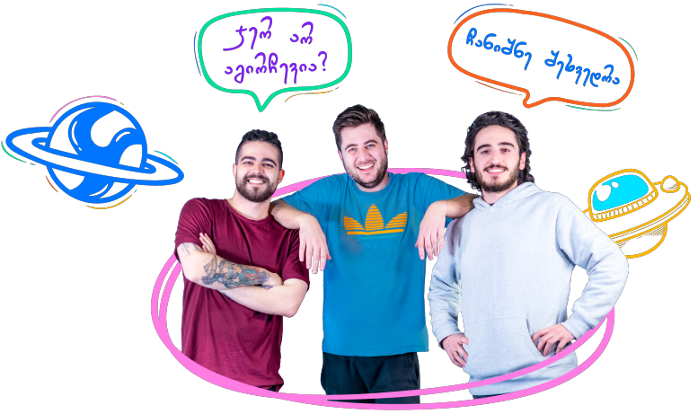

რა არის ნოვატორი?
"ნოვატორი" კომპიუტერული მეცნიერების სკოლაა, სადაც გვსურს, რომ თამაშითა და ხალისით შევასწავლოთ და შევაყვაროთ ახალი ტექნოლოგიები 11-დან 15 წლამდე მოზარდებს. ჩვენ გთავაზობთ პროფესიონალი მენტორებით სავსე სივრცეს და თამაშად ქცეულ სასწავლო პროცესს. ჩვენი კურსი საშუალებას მოგცემს სრულყოფილად აითვისო ახალი პროფესია და მასთან დაკავშირებული უნარები, გაიუმჯობესო სასაუბრო ინგლისური და ყველა კომპონენტში მოემზადო შენი პირველი გასაუბრებისთვის.